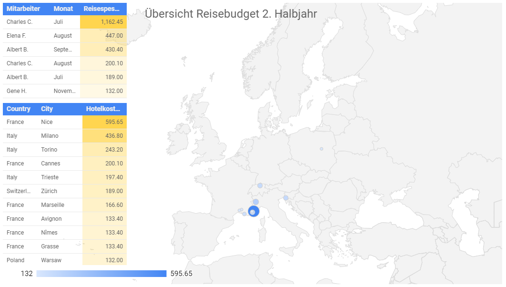

Die neuesten Beiträge
Mit einem Dashboard behalten Sie Ihre Zahlen im Überblick
Es gibt kein Unternehmen, bei dem nicht täglich Daten anfallen. Um die wichtigsten davon im Auge zu behalten, setzt man schon lange auf so genannte "Dashboards", manchmal auch "Cockpit" genannt. Durch sinnvolle Auswahl und Anordnung der Kennzahlen ist im Idealfall auf einen Blick klar, was Sache ist
Das absolute Minimum: eine Tabelle
Gibt es nur wenige unternehmenskritische Kennzahlen, dann reicht eine schlichte Tabelle, die den Ist-Zustand der aktuellen Periode (Tag, Woche, Monat, Quartal oder Jahr) widergibt.
| Seitenabrufe | Besuche | Besucher pro Tag | |
|---|---|---|---|
| Gestern | 12,684 | 2,995 | 1,575 |
| Vor 1 Woche | 12,731 | 2,859 | 1,415 |
Solche Tabellen werden bevorzugt als Excel Sheets angelegt, weil sich damit rechnen lässt und auf diese Weise Differenzen oder Trends graphisch hervorgehoben werden können.
Etwas komplexer: Das Wichtigste zusammenfassen, die Details auslagern
Während der letzten Jahre habe ich für ein Unternehmen täglich Zahlen erhoben, die nach Monaten gegliedert jeweils in eine Tabelle einzutragen waren. Jeden Monat gab es eine neue Tabelle und ein zugehöriges Diagramm, so dass der Verlauf von Anfang bis Ende des Monats zu ersehen war.
Die Abteilungsleitung wollte jedoch einen täglichen Statusbericht, der auf drei Fragen Antwort gab: Wie waren die Zahlen gestern? Welches Ergebnis ist auf Ende Monat zu erwarten? Und wie verhält sich dieses Ergebnis zum Vormonat beziehungsweise Vorjahr?
Als Lösung für diese Aufgabe hat sich Google Sheets bewährt. Jeder Monat bekommt eine eigene Tabelle und in einer separaten Tabelle werden die verlangten Zusammenfassungen automatisch angezeigt.
Link zu Google Sheets: Showcase: Traffic Dashboard (GS)
Selbe Daten, datenbankbasiert auf Google Data Studio: Showcase: Traffic Dashboardn (GDS)
Ein Dashboard für unterwegs
Als Nachteil der gewählten Lösung erwies sich, dass sich Google Sheets zwar auf dem Mobiltelefon aufrufen lässt, dass aber die Lesbarkeit der Tabelle nicht besonders gut ist. Wir beschlossen daher, eine sehr simple mobile Applikation zu entwickeln, die die Daten aus der Tabelle herauszieht, umformatiert und in einer für Mobilgeräte optimierten Form darstellt. Einen Screenshot sehen Sie unten.
Komplexere Dashboards mit Google Data Studio
Daten, die man in Tabellen erfasst hat, lassen sich in Google Datastudio einfach als Diagramme darstellen. Im untenstehenden Beispiel wollte ein Vorgesetzter den Überblick haben, welches Mitglied seines Teams welche Reisespesen abgerechnet hatte, und zur Optimierung der Hotelkosten wollte er wissen, wie sich die gesamten Kosten auf die einzelnen Städte, die sein Team besuchte, verteilten.

Es gibt viele Tools, mit denen man Dashboards erstellen kann
Der "Mercedes" unter den Tools ist zweifellos Tableau. Mit dieser Software lassen sich hochkomplexe, dynamische Dashboards erstellen, an die Datenquellen jeglicher Art angebunden werden können. Für KMU ist Tableau aber wahrscheinlich eine Nummer zu gross, sowohl was den Aufwand betrifft, den man in das Erlernen seiner Benutzung investieren muss als auch die Lizenzkosten, die anfallen.
Microsoft bietet mit Power BI ein vergleichbares, wenn auch nicht so mächtiges Produkt zu einem sehr günstigen Preis an, doch für viele kleine Unternehmen ist auch das noch eine Ausgabe, die man sich sehr gut überlegen muss.
Googles Data Studio ist kostenlos und verlangt als Voraussetzung nur ein Google-Konto. Seine Stärke liegt vor allem darin, dass sich andere Google-Produkte wie Google Sheets, Google Cloud SQL, Google BigQuery, Google Ads und vor allem Google Analytics mit wenigen Mausklicks einbinden lassen.
Den produktiven Umgang mit Data Studio zu erlernen, ist nicht ganz einfach und braucht einige Zeit. Eher enttäuschend ist die Langsamkeit, mit der Dashboards aktualisiert werden, wenn sie auf grössere Datenmengen zugreifen müssen.
Wie kommt man nun zu einem eigenen Dashboard?
Der erste Schritt ist immer: Herausfinden, welche Daten so wichtig sind, dass man sie täglich, wöchentlich oder monatlich verfolgen muss. Ausgehend davon kann man sich eine Skizze machen, wie die Daten dargestellt werden sollen.
Abhängig davon, wieviele Kennzahlen auf das Dashboard sollen, wie komplex die Berechnungen dahinter sind und welche besonderen Wünsche man bei der Darstellung hat, kann man im simpelsten Fall eine Excel-Tabelle selbst erstellen oder aber, im Fall aufwendigen Darstellungen mit vielen Daten, einen Spezialisten mit der Erstellung beauftragen.
Gerne offerieren wir Ihnen eine gratis Erstberatung und einen konkreten Vorschlag, wie Ihr Dashboard aussehen könnte. Wenn Sie sich vor dem 30.9.2020 melden, nehmen Sie an der Verlosung einer einmaligen fixfertigen Umsetzung Ihres Dashboards teil.